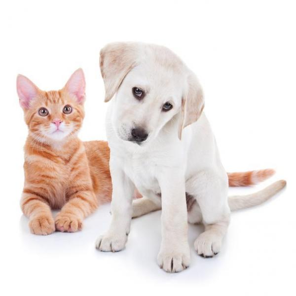

Segundo OMS, Brasil tem 30 milhões de animais vivendo nas ruas!
29, maio 2015

Não é mistério para ninguém a enorme quantidade de animais abandonados nas ruas. Basta sair de casa e andar por pouco tempo que, inevitavelmente, você irá se deparar com um cão ou gato que vive abandonado nas ruas.
Sim, abandonado. Seja por uma família, que adquiriu o animal mas desistiu de cuidar dele, ou pelo poder público. ONGs e protetores independentes estão constantemente se referindo a esses animais nas ruas, muitas vezes em situação de risco ou emergência. E como é alarmante a quantidade de animais! Mas afinal, de que número estamos falando exatamente?
De acordo com a Organização Mundial da Saúde, há cerca de 30 milhões de animais abandonados no Brasil. Destes, 20 milhões são cachorros, enquanto 10 milhões são gatos. Para você ter ideia, em 2010, o continente inteiro da Oceania tinha cerca de 36 milhões de pessoas. E isso são números referentes a 2014, é muito provável que a situação esteja até pior.
É duro, para quem trabalha ou é engajado de alguma forma com a proteção animal, saber que a quantidade de animais esquecidos nas ruas é tão grande. Além da vida dura a qual os animais são submetidos, esse valor representa também um problema de saúde pública. E tudo isso nos traz a dois pontos fundamentais: o abandono precisa acabar, a adoção deve ser promovida e a castração deve ser incentivada.
Conhecer o problema é o primeiro passo para que possamos fazer algo contra ele. Tomar providências. São 30 milhões de animais nas ruas? Então é esse o valor que teremos sempre em mente, e trabalharemos até que ele seja o mais próximo de zero possível. Temos um longo caminho pela frente.
http://www.mapaa.org.br/segundo-oms-brasil-tem-30-milhoes-de-animais-vivendo-nas-ruas/